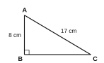

Part A – Answer all questions in the space provided. (2 marks each)
Write the binary number 1101102 as a decimal number (in base ten).
The nth term of a number pattern is n2 + 1. Write its 4th and 5th terms.
Simplify: 123 + 234 − 112
The price of 4 books is Rs 960. Find the price of 7 such books.
Factorise: 4x2 − 25
Simplify: x−2 × x5 × y0
Round off 0.04572 to two significant figures.
Solve: x3 + 2 = 7
In the figure, A, B, C and D are points on a straight line and AB = CD. Show that AC = BD, and name the axiom used.

The angles of a triangle are in the ratio 2 : 3 : 4. Find the largest angle.
Find the perimeter of a semicircular lamina of radius 14 cm. (π = 22/7)
Find the length of BC in the right-angled triangle ABC.

n(A) = 12, n(B) = 9 and n(A ∩ B) = 4. Find n(A ∪ B).
Find the magnitude of an interior angle of a regular decagon (10 sides).
How many 750 ml bottles can be completely filled from 6 litres of juice?